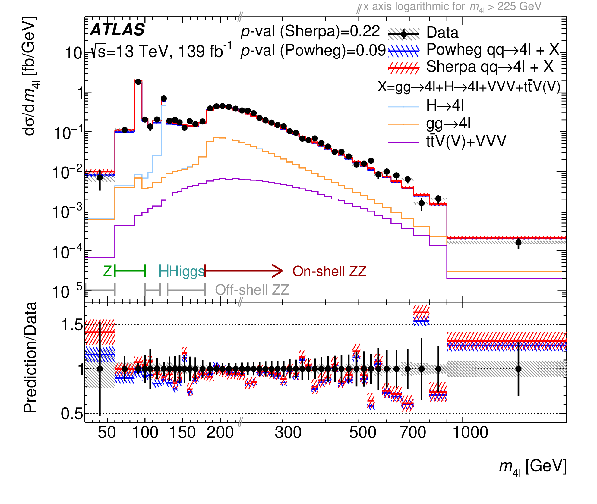
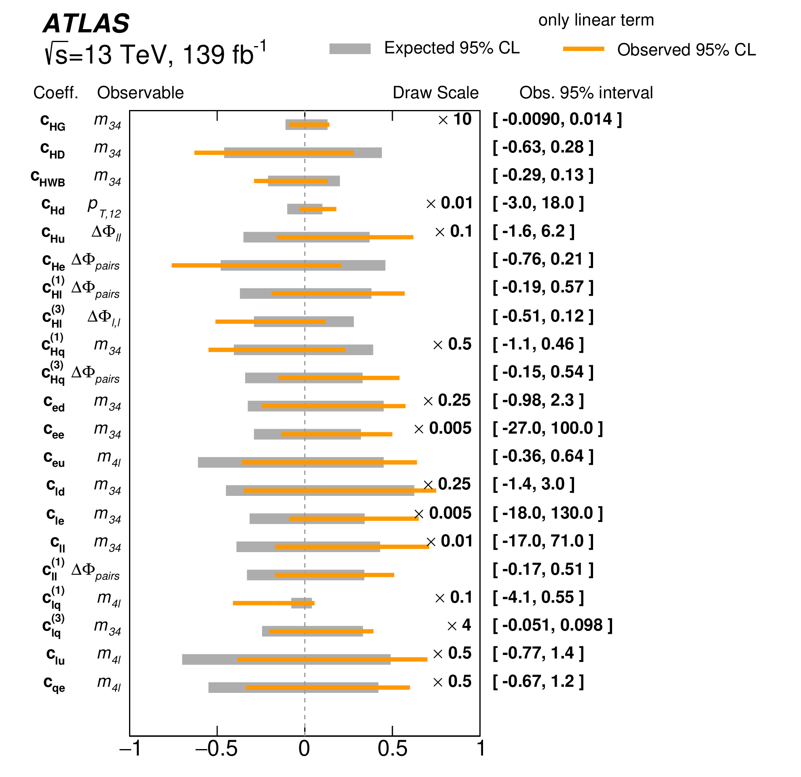

Introduction
Gauge boson interactions, Triple Gaugle Couplings (TGC) and Quartic Gauge Couplings (QGC), are direct consequences of the non-Abelian nature of the SU(2)L gague structure for the Electroweak sector of the SM. Diboson production processes are of great importance in high-energy physics at the LHC. The measurement of these processes are important as they test the electroweak symmetry breaking mechanism, whereby the unified electroweak force separates into electromagnetic and weak forces in the Standard Model, and are complementary to the measurements of Higgs boson production and decay. Vector boson processes are also an excellent probe to seek deviation from theoretical predictions, such as anomalous TGC (aTGC) and aQGC. If there were no Higgs boson, the rate of vector-boson-scattering (VBS) processes would become unphysically large. With the discovery of a Higgs boson, they have remained interesting as a way to study electroweak symmetry breaking and even to probe for new heavier Higgs bosons.
Diboson production
 {kind=link}
{kind=link}
- Measurements of $W^+W^-+\ge 1$ jet production cross-sections in $pp$ collisions at $\sqrt{s}=13$ TeV with the ATLAS detector, arXiv:2103.10319
- Measurements of differential cross-sections in four-lepton events in 13 TeV proton-proton collisions with the ATLAS detector, arXiv:2103.01918
- Measurement of the four-lepton invariant mass spectrum in 13 TeV proton-proton collisions with the ATLAS detector, JHEP04(2019)048
- Measurements of four-lepton production in pp collisions at 8 TeV with the ATLAS detector, Phys. Lett. B 753 (2016) 552-572
- Measurements of Four-Lepton Production at the Z Resonance in pp Collisions at 7 and 8 TeV with ATLAS, Phys. Rev. Lett. 112, 231806
- ZZ production cross section measurement at 8 TeV, JHEP 01 (2017) 099.
- Measurement of ZZ production in pp collisions at 7 TeV and limits on anomalous ZZZ and ZZγ couplings with the ATLAS detector, JHEP03(2013)128
Vector boson scattering
- Search for electroweak diboson production in association with a high-mass dijet system in semileptonic final states in pp collisions at 13 TeV with the ATLAS detector, Phys. Rev. D 100, 032007
- Evidence for Electroweak Production of W±W±jj in pp Collisions at 8 TeV with the ATLAS Detector, Phys.Rev.Lett. 113 (2014) 14, 141803
{kind=link}
{kind=link}